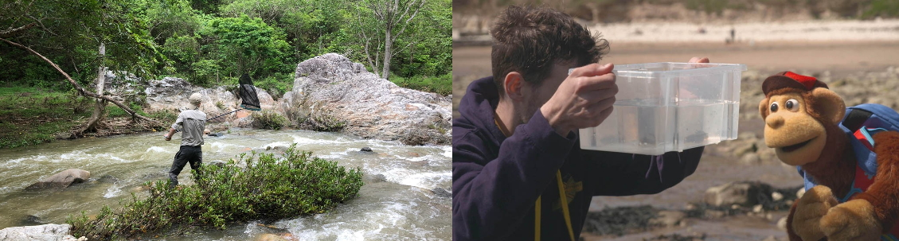

Home

Christophe Patterson
A PhD student with a passion for research, exploration and education. Has a keen interest in studying the impacts of humans’ actions, including climate change, on biodiversity and species’ geographic ranges. Interested in furthering their experience in next generation sequencing, fieldwork, scientific literacy, and communication. Has developed the key skills needed for teamwork and effective organisation across a diverse range of jobs and voluntary work
Does interspecific behavioural interference limit the ability of species to range shifts? Research focuses of Rubyspot damselflies, Hetaerina, where species engage and experience varying levels of aggressive and reproductive interference. Do the ranges of Hetaerina species that experience lower levels of interspecific interference expand more rapidly?
Director of Science for the rock pool project a not-for-profit community outreach project aiming to educate, engage and conserve rock pool wildlife in the UK.
Attended the University of Exeter (Penryn) for both a BSc in Evolutionary Biology and a two-year Master by Research. Investigated the range expansion of the St Piran’s hermit crab, Clibanarius erythropus, to the southwest UK using, population size and morphology surveys, population genetics and larval dispersal models.
I grew up just outside of Leeds on the boundary of the Yorkshire dales.
You can reach out by email anytime or Twitter (@Christophe_Patt)
Papers
Patterson C, Laing C, Early R. The range expansion of Clibanarius erythropus to the UK suggests that other range-shifting intertidal species may not follow Marine Biology 2022
Patterson C, Slater M, Early R, Laing C. The status of Clibanarius erythropus after a recent range expansion to Great Britain, with the highest latitude recording of a gravid individual. Marine Biology Records. 2020
Sanders D, Frago E, Kehoe R, Patterson C, and Gaston KJ. . A meta-analysis of biological impacts of artificial light at night. Nature Ecology & Evolution 2021
Media
Into the Wild Podcast: Exploring Rockpools with Ben & Christophe from The Rockpool Project 19/04/2022
Milkshake! Monkey’s amazing adventures S2:E2 Rock-Pooling Channel 5 in August 2021.
Cornwall’s rockpool species ‘threatened by climate change’ ITV news 20/01/2022
Cornwall’s rockpool species ‘threatened by climate change’ BBC Spotlight 20/01/22
The week in wildlife The Guardian 21/01/22
